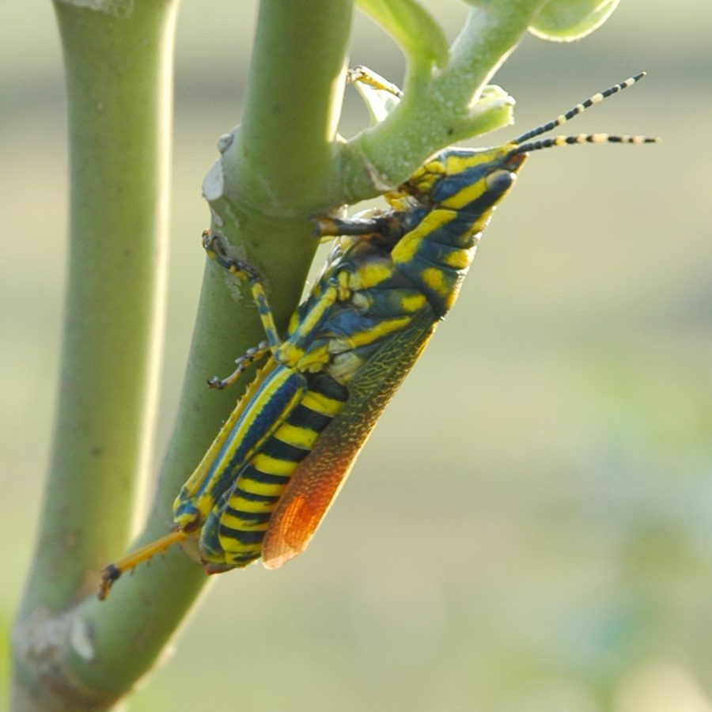

रंगबिरंगा टिड्डाPainted Grasshopper
Poekilocerus pictus · Pyrgomorphidae · INS-0044

- Scientific name
- Poekilocerus pictus (Fabricius, 1775)
- Family
- Pyrgomorphidae
- Hindi
- रंगबिरंगा टिड्डा
- Status here
- native
- IUCN
- not evaluated
When to look कब देखें
Expected mainly in March, April, May, June, July, August, September, October.
रंगबिरंगा टिड्डा / Painted Grasshopper
Poekilocerus pictus (Fabricius, 1775) — Pyrgomorphidae
रंगबिरंगा टिड्डा (आक का टिड्डा / मदार का टिड्डा) — पूर्वी उत्तर प्रदेश के बंजर इलाकों, खेतों के किनारों और सड़कों के किनारे बहुतायत से पाया जाने वाला एक बहुत बड़ा, सुंदर और चमकीला टिड्डा (grasshopper) है। इसकी सबसे बड़ी पहचान इसका चमकीला नीला-हरा (turquoise-blue) और पीला-नारंगी (orange-yellow) शरीर है जिसके ऊपर काले और पीले रंग की पट्टियाँ बनी होती हैं। इसका पेट चमकीले नारंगी और काले छल्लों से घिरा होता है। यह एक विशेष प्रकार का 'चेतावनी-रंग' (aposematic/warning-coloured) दर्शाने वाला कीट है; यह लगभग पूरी तरह से ज़हरीले आक के पौधे (Calotropis procera (not yet in the atlas; see Giant Milkweed) - मदार) की पत्तियों को खाता है और उसके ज़हरीले रसायनों (cardiac glycosides) को अपने शरीर में जमा कर लेता है, जिससे यह अन्य शिकारियों (पक्षियों और छिपकलियों) के लिए अत्यंत ज़हरीला और अरुचिकर हो जाता है। परेशान होने पर यह अपने शरीर से एक झागदार ज़हरीला तरल (frothy toxic secretion) भी निकालता है। यह कोई कृषि फसल पीड़क नहीं है, क्योंकि यह मुख्य रूप से केवल आक पर ही निर्भर रहता है।
Quick Identification त्वरित पहचान
| Feature | Description |
|---|---|
| Size | Very large, heavy-bodied grasshopper; female is up to 55–65 mm long, male slightly smaller |
| Colouration | Bright yellow and turquoise-blue longitudinal bands on head and thorax; abdomen has orange and black rings |
| Wings | Forewings (tegmina) are green-yellow with bold yellow spots; hindwings are bright brick-red, visible in flight |
| Antennae | Long, ringed with yellow and black bands |
| Defense secretion | Exudes a foul-tasting, stinging milky froth from thoracic glands when touched |
| Host Association | Found almost exclusively sitting and feeding on the leaves of Calotropis procera (Aak) |
Field tip: Look in wild scrublands or roadside ditches during summer. Search for large patches of the green Aak (Calotropis procera) plant. Watch for very large, colorful blue-and-yellow grasshoppers sitting openly on the leaves. They make no attempt to hide because they are poisonous. The female is larger than the male and is shown in the field tip.
Morphology आकारिकी
Biometrics (typical measurements of adults in the northern Indian plains showing sexual size dimorphism):
| Measurement | Range |
|---|---|
| Adult female body length | 55–65 mm |
| Adult male body length | 45–55 mm |
| Antenna length | 25–35 mm |
| Hind femur length | 22–28 mm |
| Weight (adult female) | 3.5–4.5 g |
| Weight (adult male) | 2.0–3.0 g |
Adult Grasshopper: The body is large, cylindrical, and stout. The head and pronotum are marked with broad, parallel stripes of bright yellow and greenish-blue. The tegmina (leathery forewings) are greenish-yellow, covered with numerous yellow spots. The hindwings are bright red or reddish-pink, which are exposed as a flash color when it jumps or flies. The abdomen has regular, contrasting rings of bright orange-red and black.
Nymphs: Early instars are wingless, smaller, and display a pale greenish-yellow base color with dark brown spots. As they grow (passing through 6 instars), the bright warning colors become more prominent.
Behaviour & Ecology व्यवहार और पारिस्थितिकी
- Obligate herbivory: It is specialized to feed on Calotropis procera (Aak). This plant produces a thick, milky latex rich in cardiac glycosides, which are highly toxic to most insects and vertebrates. The Painted Grasshopper is immune to this toxin.
- Sequestration & Aposematism: Rather than breaking down the plant's glycoside toxins, the grasshopper stores (sequesters) them in specialized fat bodies and defensive glands. The bright yellow, blue, and orange colors serve as a warning (aposematism) to birds, monkeys, and lizards that eating this grasshopper will cause vomiting or heart failure.
- Froth ejection: When grabbed by a predator, it uses abdominal pressure to eject a stream of foul-smelling, stinging white froth from a dorsal gland located between the head and thorax. This froth contains high concentrations of Calotropis cardiac toxins.
Life Cycle / Phenology जीवन चक्र
- Reproduction: Univoltine (produces a single generation per year in UP).
- Mating: Occurs in summer (May–June). The male mounts the larger female, sometimes staying attached for hours.
- Oviposition: The female uses her short, strong ovipositor valves to drill a hole 5–8 cm deep in dry sandy soil near Calotropis plants. She lays a large mass of 50–150 eggs inside a protective, foamy plug (pod) that hardens in the soil.
- Egg phase: Eggs remain in the soil through the monsoon and hatch in early spring (February–March) of the following year.
- Nymphal development: Nymphs feed on young Calotropis leaves, taking about 60–80 days to reach maturity through six moults.
Host Plants or Prey आहार
Primary host plant:
- Obligate host: Aak / Madar (Calotropis procera (not yet in the atlas; see Giant Milkweed)), which provides both food and chemical defense toxins.
- Secondary hosts: Occasionally feeds on castor or wild Solanaceae weeds if Calotropis leaves are completely stripped, but it cannot breed successfully without its primary host.
Predators / Natural Enemies शत्रु
- Predators: Most birds (like crows and drongos) avoid adult grasshoppers due to their toxicity. However, specialized birds (like the Greater Coucal Centropus sinensis) and large garden lizards (Calotes versicolor) sometimes capture young nymphs before they have accumulated high levels of toxins.
- Parasites: Mites often attach to the base of the wings, and parasitic fly larvae (Sarcophagidae) feed on the eggs in the soil.
Agricultural / Human Relevance कृषि प्रासंगिकता
Non-pest status. Unlike migratory locusts, the Painted Grasshopper is not a pest of cultivated food crops in eastern UP. Since it feeds almost exclusively on Calotropis (which is a wild weed of waste ground), it has no negative impact on agriculture.
Medicinal and educational value:
- Used as a classic teaching model in Indian biology labs to demonstrate insect anatomy and warning coloration (aposematism).
- Locally, children play with the grasshopper, calling it "Aak ka Ghoda" or "Ramji ka Ghoda," fascinated by its bright colors.
Expected Locally स्थानीय रूप से अपेक्षित
Not a field record. Written from published accounts for eastern Uttar Pradesh. No confirmed local sighting yet — if you have seen it, that is what the atlas needs.
अभी तक स्थानीय पुष्टि नहीं। यह विवरण प्रकाशित स्रोतों से है, किसी अवलोकन से नहीं।
A common resident throughout the Basti district. They are regularly observed in dry, sandy wastelands, river embankments of the Ghaghra, and roadside borders where Aak bushes are common. They are highly active during the hot summer months of May and June.
Distribution वितरण
Global range: Widespread across the dry plains of South Asia (India, Pakistan, Nepal).
In India: Common throughout the dry and semi-arid plains, particularly in northern, central, and western India.
In Uttar Pradesh: Common state-wide in all dry scrublands, river basins, and field margins.
In Basti district / eastern UP: Widespread across all blocks where Calotropis grows.
Research Questions शोध प्रश्न
Anyone can investigate these | कोई भी इन प्रश्नों की जाँच कर सकता है
- How far does a Painted Grasshopper jump when startled by a human observer? — Measure and record jump distances.
- Do birds in your village actively avoid attacking Painted Grasshoppers when they sit in the open? — Observe interactions between birds and grasshoppers on Aak bushes.
- What is the ratio of male to female grasshoppers found on a single Calotropis bush in June? — Count populations.
- How long does it take for a stripped Calotropis bush to grow new leaves after a grasshopper feeding event? — Track plant recovery.
- Does the chemical froth ejected by the grasshopper irritate the skin of domestic goats that try to feed on Calotropis? / क्या टिड्डे द्वारा छोड़ा जाने वाला रासायनिक झाग उन बकरियों को प्रभावित करता है जो आक खाने की कोशिश करती हैं? — Observe village livestock interactions.
Similar Species मिलती-जुलती प्रजातियाँ
| Species | How to tell apart | हिंदी |
|---|---|---|
| Desert Locust (Schistocerca gregaria) | Dull yellow-brown body; lacks blue-and-yellow bands; feeds on crops, flies in massive swarms | रेगिस्तानी टिड्डी — पीला-भूरा शरीर, झुंड में उड़ान |
| Southern Green Stink Bug (Nezara viridula) | Much smaller (12–15 mm); entirely green body; shield-shaped; feeds on crops | हरा खटमल — छोटा आकार, रस-चूसक |
| Ak Grasshopper related species | (e.g. Chrotogonus species which are small, dusty-brown, and camouflage with soil) | मटमैला टिड्डा — छोटा, मिट्टी जैसा रंग |
Field rule: Very large grasshopper (45–65 mm) with bright yellow and turquoise-blue bands on head, orange-and-black rings on the abdomen, feeding only on Aak leaves, is the Painted Grasshopper.
Taxonomy & Classification वर्गीकरण
Original description. Carl Linnaeus's student Johann Christian Fabricius described the Painted Grasshopper as Gryllus pictus in 1775 in his Systema Entomologiae (p. 289). The type locality was India. Serville placed it in the genus Poekilocerus in 1831. The genus name Poekilocerus is derived from the Greek poikilos (spotted/painted) and keras (horn/antenna). The specific name pictus is Latin for painted or colored, referencing its bright appearance.
Subspecies. Monotypic — no subspecies are currently recognised.
Family and order placement. Placed in the order Orthoptera, suborder Caelifera, family Pyrgomorphidae (gaudy grasshoppers), subfamily Pyrgomorphinae.
Phylogenetic notes. The genus Poekilocerus contains several warning-coloured grasshoppers associated with toxic Apocynaceae plants, with Poekilocerus pictus being the most common representative in South Asia.
IUCN status rationale. Not evaluated (NE) by the IUCN Red List. It has a secure population and is common throughout its range.
Photo Gallery फोटो गैलरी
References संदर्भ
- Fabricius, J. C. (1775). Systema Entomologiae. Flensburgi et Lipsiae, p. 289. [original description]
- Atwal, A. S. & Dhaliwal, G. S. (2015). Agricultural Pests of South Asia and Their Management. Kalyani Publishers, New Delhi.
- David, B. V. & Ramamurthy, V. V. (2016). Elements of Economic Entomology. Namrutha Publications, Chennai.
- Uvarov, B. P. (1966). Grasshoppers and Locusts. Vol. 1. Cambridge University Press, Cambridge.
- Orthoptera Species File Database (2024). Poekilocerus pictus taxon details.
- GBIF Occurrence Data — Poekilocerus pictus, Uttar Pradesh (2010–2025).
Source file: species/fauna/insects/painted_grasshopper.md